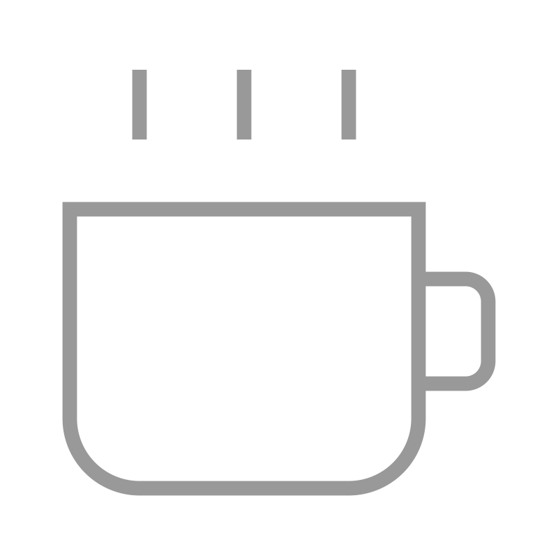
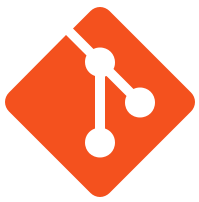
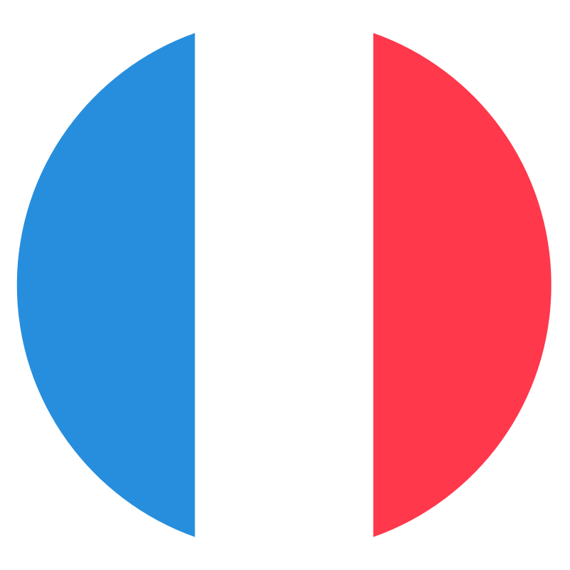

<!DOCTYPE html><html lang="en" data-astro-cid-sckkx6r4> <head><meta charset="UTF-8"><meta name="description" content="Desarrollo de sitios web con componentes increibles, con habilidades en frontend y backend."><meta name="viewport" content="width=device-width"><link rel="icon" type="image/svg+xml" href="/favicon.svg"><meta name="generator" content="Astro v5.1.9"><title>Portfoliux - Frontend Portfolio</title><link rel="stylesheet" href="/src/styles/global.css"><link rel="stylesheet" href="/_astro/index.DIJlKBEB.css"></head> <script src="/scripts/timezone.js" defer></script> </html> <body class="bg-black" data-astro-cid-sckkx6r4>  <main class="text-white"> <!--      <div class="intro">
            <span class="msg msg-one font-serif">Good monrning</span>
            <span class="msg msg-two font-serif"> this is</span>
        </div> --> <section class=""> <section class="flex justify-evenly border-b border-white/10 py-4 md:mx-40 "> <div class="flex gap-3"> <a href="https://rosettiscoffee.netlify.app/">  </a> <a href="https://applclone.netlify.app/">  </a> </div> <div class="flex gap-3"> <a href="https://applclone.netlify.app/">  </a> <a href="https://rosettiscoffee.netlify.app/">  </a> <a href="https://applclone.netlify.app/">  </a> </div> <div class="flex gap-3"> <a href="https://applclone.netlify.app/">  </a> <a href="https://rosettiscoffee.netlify.app/">  </a> </div> </section> </section> <section class="flex flex-col md:flex-row md:mx-20 md:justify-around md:mt-10 md:mb-5 mb-40"> <section class="md:order-1"> <section class="mt-8 mb-14 mx-6 md:mt-4 md:mb-36"> <section class="flex flex-col "> <section class="mb-6 text-white/80"> <section class="flex flex-col text-[38px] md:text-[50px] font-[Manrope] leading-10 md:leading-none tracking-[-3px] relative mt-1 "> <span>The way to</span> <span>create <span class=" timezone text_colors">modern</span></span> <span>and <span class="timezone text_colors pr-1">simple</span></span> <span class="">websites</span> </section> </section> <section class="flex gap-2 md:gap-4"> <span class="border border-white/30 rounded-xl w-fit inter-200"> <section class="bg-white/10 m-[2px] px-2 py-[6px] w-fit rounded-[9px] text-[11px] md:text-[14px] text-white/80"> 
Frontend Development
 </section> </span> <span class="border border-white/30 rounded-xl w-fit inter-200"> <section class="bg-white/10 m-[2px] px-2 py-[6px] w-fit rounded-[9px] text-[11px] md:text-[14px] text-white/80"> 
Using <span class="timezone text_colors">UX / UI</span> Techniques
 </section> </span> </section> </section> </section> <div class=""> <div class="flex justify-center"> <div class="scroll-container" id="scrollContainer"> <div class="flex gap-3 items-center"> <div class="card"> <section class="flex flex-col border border-white/30 rounded-xl max-w-48 w-[190px] h-[265px] shrink-0"> <section class="rounded-t-xl"> <section class=" flex flex-col text-center border-b border-white/30 h-24 p-2 flew-wrap"> <section class="flex flex-col justify-center items-center inter-200"> <span class="animated_white_basic text-[18px] tracking-[-1.5px] pr-[1px] inter-700 ">Rosetti&#39;s Coffee</span> <span class="text-[10px] text-white/50 mb-1 inter-100">February 2023</span> </section> <p class="text-[10px] text-white/40 whitespace-normal inter-200">View menus, schedules, events and make reservations to anybody.</p> </section> </section> <section class=" border-b border-white/30 p-[2px] ">  </section> <section class="flex justify-between items-center p-[10px] "> <span class="flex gap-2">    </span> <span> <a href="https://apple.com"></a> </span> </section> </section> </div> <div class="card"> <section class="flex flex-col border border-white/30 rounded-xl max-w-48 w-[190px] h-[285px] shrink-0"> <section class="rounded-t-xl"> <section class=" flex flex-col text-center border-b border-white/30 h-24 p-2 flew-wrap"> <section class="flex flex-col justify-center items-center inter-200"> <span class="animated_white_basic text-[18px] tracking-[-1.5px] pr-[1px] inter-700 ">Artist Portfolio</span> <span class="text-[10px] text-white/50 mb-1 inter-100">February 2023</span> </section> <p class="text-[10px] text-white/40 whitespace-normal inter-200">Social network with encrypted conversations and publications</p> </section> </section> <section class=" border-b border-white/30 p-[2px] ">  </section> <section class="flex justify-between items-center p-[10px] "> <span class="flex gap-2">    </span> <span> <a href="https://apple.com"></a> </span> </section> </section> </div> <div class="card"> <section class="flex flex-col border border-white/30 rounded-xl max-w-48 w-[190px] h-[265px] shrink-0"> <section class="rounded-t-xl"> <section class=" flex flex-col text-center border-b border-white/30 h-24 p-2 flew-wrap"> <section class="flex flex-col justify-center items-center inter-200"> <span class="animated_white_basic text-[18px] tracking-[-1.5px] pr-[1px] inter-700 ">Modern Train</span> <span class="text-[10px] text-white/50 mb-1 inter-100">February 2023</span> </section> <p class="text-[10px] text-white/40 whitespace-normal inter-200">Get training guides from personal trainers and view progress</p> </section> </section> <section class=" border-b border-white/30 p-[2px] ">  </section> <section class="flex justify-between items-center p-[10px] "> <span class="flex gap-2">    </span> <span> <a href="https://apple.com"></a> </span> </section> </section> </div> </div> </div> </div> </div> </section> <section class="h-64 relative md:hidden inter-200"> <section class="absolute pt-[70px] flex undefined flex-col gap-6 text-[14px] [&#38;>*]:text-white/30"> <span class="pl-36">Commitment</span> <span class="pl-40">Security and Maintenance</span> <span class="pl-36">Visual Attraction</span> </section> <section class="large-blur"></section> </section> <section class="md:order-0"> <section class="w-[290px] flex flex-col justify-center mx-auto mb-10"> <section class="mb-3 flex gap-2 items-center justify-center"> <section class="border border-white/30 rounded-xl p-3 w-fit flex gap-2 items-center px-6 "> <span class="text-[18px] tracking-[-1px] font-[Manrope]">Technologies</span> </section> </section> <div class="border border-white/30 rounded-xl overflow-hidden relative"> <section class="bg-white/10 m-[4px] p-4 rounded-md flex flex-wrap gap-4">         </section> </div> </section> <section class="w-72 flex flex-col justify-center mx-auto mb-10"> <section class="mb-3 flex gap-2 items-center justify-center"> <section class="border border-white/30 rounded-xl p-3 w-fit flex gap-2 items-center px-6 "> <span class="text-[18px] tracking-[-1px] font-[Manrope]">About me</span> </section> </section> <div class="border border-white/30 rounded-xl contenedor mx-auto w-72 overflow-hidden relative"> <section class="flex flex-col text-start flex-wrap text-[12px] p-1 inter-200 gap-[2px] text-white/70 "> <span class="bg-white/10 p-3 rounded-t-md">Adaptable in Scrum and Kanban methodologies</span> <span class="bg-white/10 p-3 ">Connectivity via Zoom, Slack, Microsoft Teams, Discord or Whatsapp</span> <span class="bg-white/10 p-3">Good writer, good communication skills, good workflow and commitment</span> </section> <section class="pl-2 pb-3 pt-2 rounded-md inter-300"> <a href="../curriculum.pdf" target="_blank" class="text-[11px] text-white/70 flex gap-1 items-center w-fit bg-white/10 rounded-b-md rounded-l-md py-1 px-2">
View Curriculum </a> </section> </div> </section> <section class="w-72 mx-auto"> <section class="mb-3 flex gap-2 items-center justify-center"> <section class="border border-white/30 rounded-xl p-3 w-fit flex gap-2 items-center px-6 "> <span class="text-[18px] tracking-[-1px] font-[Manrope]">Languages</span> </section> </section> <div class="w-72 text-[12px] border border-white/30 rounded-xl contenedor mx-auto  overflow-hidden relative"> <section class="bg-white/10 inter-200 m-1 rounded-md p-4 flex flex-col"> <section class="flex items-center gap-2"> 
English
<span class=""><span class="bg-black/50 py-1 px-2">B1</span></span> </section> <span class="border-b border-white/10 my-3"></span> <section class="flex items-center gap-2"> 
Spanish
<span class=""> <span class="bg-black/50 py-1 px-2">Native</span></span> </section> <span class="border-b border-white/10 my-3"></span> <section class="flex items-center gap-2"> 
Français
<span class=""> <span class="bg-black/50 py-1 px-2">A1</span></span> </section> </section> </div> </section> </section> <section class="h-64 relative md:hidden inter-200"> <section class="absolute pt-[70px] flex left-16 flex-col gap-6 text-[14px] [&#38;>*]:text-white/30"> <span class="pl-2">+3 Projects deployed</span> <span class="undefined">Good Reviews</span> <span class="pl-2">Communication</span> </section> <section class="large-blur-right"></section> </section> <section class="md:order-2"> <section class="flex flex-col gap-2 w-[260px] mx-auto mb-20 md:mb-20"> <section class="flex flex-col p-3 justify-center items-center border border-white/30 rounded-xl mx-2"> <span class="text-[22px] tracking-[-1px] font-[Manrope]">Experiences</span> </section> <section class="dark:border-black"> <section class="scrolls_bar flex flex-col py-2 gap-16"> <section class="border border-white/30 rounded-xl"> <section class="bg-white/10 m-1 p-3 rounded-md"> <section class="pb-[10px]"> <div class="flex gap-2"> <section class="flex flex-col"> <section class="flex items-center gap-2"> <h1 class="text-[16px] ">Apple Inc</h1>  <span class="dark:text-black text-[13px] text-[#C7C7C7] bg-black/50 py-1 px-2"> 2020 - 2022 </span> </section> <section class="flex items-center gap-1"> <span class="text-[14px] h-fit w-fit text-[#5465ff] timezone text_colors"> iOS Developer </span> </section> </section> </div> </section> <section class="dark:text-black text-[#cfcfcf] text-[12px] "> <p class="bg-[rgba(170,170,170,0.4)]"></p><p class="pb-2 text-white/70 inter-200"> Working and collaborating in the development of a multiplatform application for the management of the company&#39;s internal products </p> <p class="text-white/70 inter-200"> This development also achieved considerable progress in terms of design and ease of use. </p>  <section class="flex items-center justify-between pt-3 gap-2"> <span class="flex justify-end gap-2">    </span> </section> </section> </section> </section> <section class="border border-white/30 rounded-xl"> <section class="bg-white/10 m-1 p-3 rounded-md"> <section class="pb-[10px]"> <div class="flex gap-2"> <section class="flex flex-col"> <section class="flex items-center gap-2"> <h1 class="text-[16px] ">Microsoft</h1>  <span class="dark:text-black text-[13px] text-[#C7C7C7] bg-black/50 py-1 px-2"> 2013 - 2017 </span> </section> <section class="flex items-center gap-1"> <span class="text-[14px] h-fit w-fit text-[#5465ff] timezone text_colors"> Frontend Developer </span> </section> </section> </div> </section> <section class="dark:text-black text-[#cfcfcf] text-[12px] "> <p class="bg-[rgba(170,170,170,0.4)]"></p><p class="pb-2 text-white/70 inter-200"> Working and collaborating in the development of a multiplatform application for the management of the company&#39;s internal products. </p> <p class="text-white/70 inter-200"> This development also achieved considerable progress in terms of design and ease of use. </p>  <section class="flex items-center justify-between pt-3 gap-2"> <span class="flex justify-end gap-2">    </span> </section> </section> </section> </section> <section class="border border-white/30 rounded-xl"> <section class="bg-white/10 m-1 p-3 rounded-md"> <section class="pb-[10px]"> <div class="flex gap-2"> <section class="flex flex-col"> <section class="flex items-center gap-2"> <h1 class="text-[16px] ">Microsoft</h1>  <span class="dark:text-black text-[13px] text-[#C7C7C7] bg-black/50 py-1 px-2"> 2013 - 2017 </span> </section> <section class="flex items-center gap-1"> <span class="text-[14px] h-fit w-fit text-[#5465ff] timezone text_colors"> Frontend Manager </span> </section> </section> </div> </section> <section class="dark:text-black text-[#cfcfcf] text-[12px] "> <p class="bg-[rgba(170,170,170,0.4)]"></p><p class="pb-2 text-white/70 inter-200"> Working and collaborating in the development of a multiplatform application for the management of the company&#39;s internal products. </p> <p class="text-white/70 inter-200"> This development also achieved considerable progress in terms of design and ease of use. </p>  <section class="flex items-center justify-between pt-3 gap-2"> <span class="flex justify-end gap-2">    </span> </section> </section> </section> </section> </section> </section> <section class="border border-white/30 rounded-xl p-2 flex items-center gap-2 justify-center mx-2"> <span class="text-[14px]">References</span> <span></span> </section> </section> <div class="w-72 mx-auto "> <section class="mb-4 flex gap-2 items-center justify-center"> <div class="border border-white/30 rounded-xl p-3 w-fit flex gap-2 items-center px-6 "> <span class="text-[18px] tracking-[-1px] font-[Manrope]">Available Services</span> </div> </section> <section class="flex flex-col m-1 p-1 gap-1 text-white/70 border border-white/30 rounded-xl w-72 mx-auto"> <div class=" flex flex-col rounded-t-md gap-1 text-sm inter-200"> <span class="bg-white/10 p-3 rounded-t-md">Frontend</span> <span class="bg-white/10 p-3">UI Design</span> <span class="bg-white/10 p-3 rounded-b-md">Web Maintenance</span> </div> </section> <section class="flex flex-col justify-center mt-3 inter-200"> <span class="text-white/40 text-[10px] text-center pb-[6px] ">opinion of some people when displaying and <br> using the websites</span> <div class="flex justify-center items-center [&>*]:h-[18px]">      </div> </section> </div> </section> </section> <div class="text-center flex flex-col gap-3 mb-4 md:mx-40"> <section class="flex items-center justify-between px-4 "> <span class="flex items-center gap-2 text-[12px] text-[#6d6d6d] inter-300 ">Alacant, Spain</span> <section class="flex gap-3 items-center justify-center"> <a href="https://mail.google.com/mail/?view=cm&fs=1&to=nvrscontact@gmail.com" target="_blank" rel="noopener noreferrer">  </a> <span class="flex text-[16px] gap-5 items-center"> <a href="https://www.linkedin.com/in/nvrscontact/" class="flex flex-col dropdown_social_hover items-center ">  </a> </span> <span class="flex text-[16px] gap-5 items-center"> <a href="https://github.com/nvrscontact" class="flex flex-col dropdown_social_hover items-center ">  </a> </span> </section> </section> <section class="border-t pt-4 border-white/10 inter-300"> <p class="text-[8px] md:text-[12px] text-center mx-4 text-[#6d6d6d] ">A way to create websites with modern styles without losing their easy accessibility. <br> <span class="animated_white_basic_two">If you want to collaborate, write me and develop your idea</span></p> </section> <p class="text-white/30 text-[6px] md:text-[10px] inter-300 ">© Copyright 2025 Portfoliux</p> </div> </main>  </body>